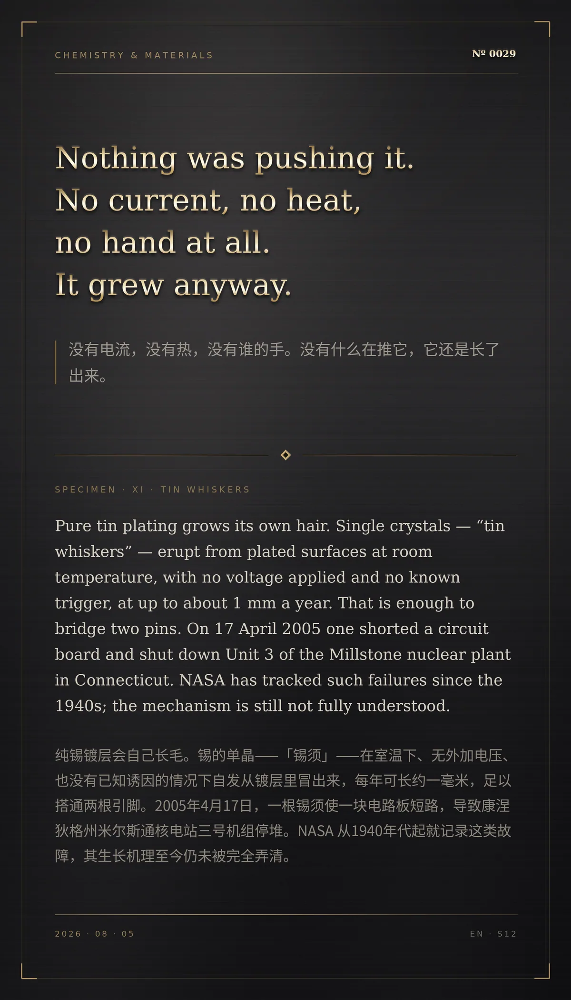

Nothing was pushing it. No current, no heat, no hand at all. It grew anyway.（没有电流，没有热，没有谁的手。没有什么在推它，它还是长了出来。）
Pure tin plating grows its own hair. Single crystals — “tin whiskers” — erupt from plated surfaces at room temperature, with no voltage applied and no known trigger, at up to about 1 mm a year. That is enough to bridge two pins. On 17 April 2005 one shorted a circuit board and shut down Unit 3 of the Millstone nuclear plant in Connecticut. NASA has tracked such failures since the 1940s; the mechanism is still not fully understood.（纯锡镀层会自己长毛。锡的单晶——「锡须」——在室温下、无外加电压、也没有已知诱因的情况下自发从镀层里冒出来，每年可长约一毫米，足以搭通两根引脚。2005年4月17日，一根锡须使一块电路板短路，导致康涅狄格州米尔斯通核电站三号机组停堆。NASA 从1940年代起就记录这类故障，其生长机理至今仍未被完全弄清。）